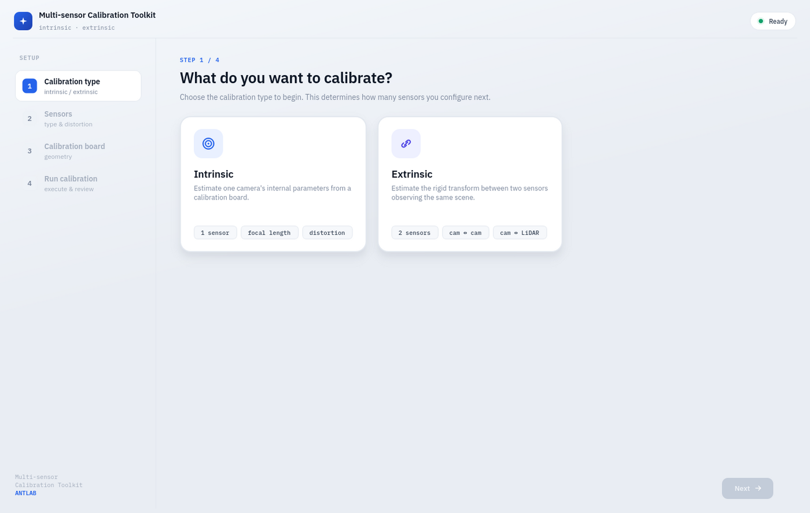
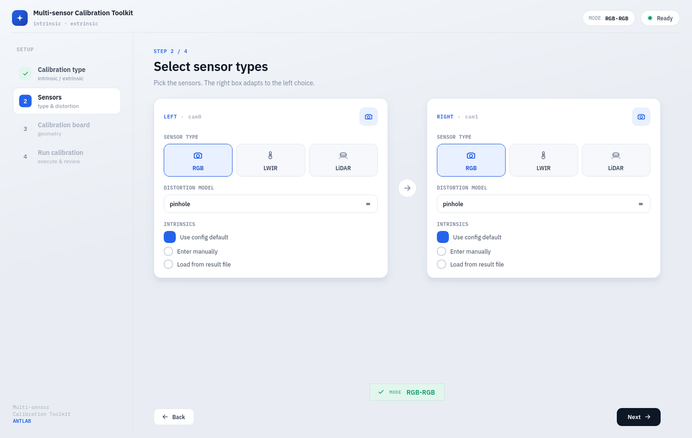
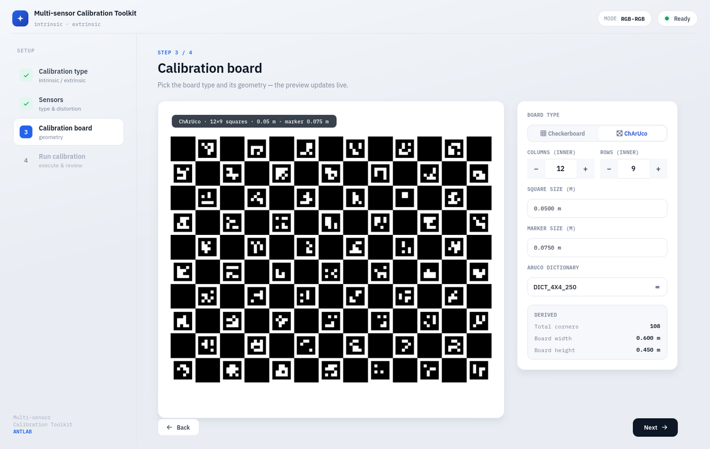
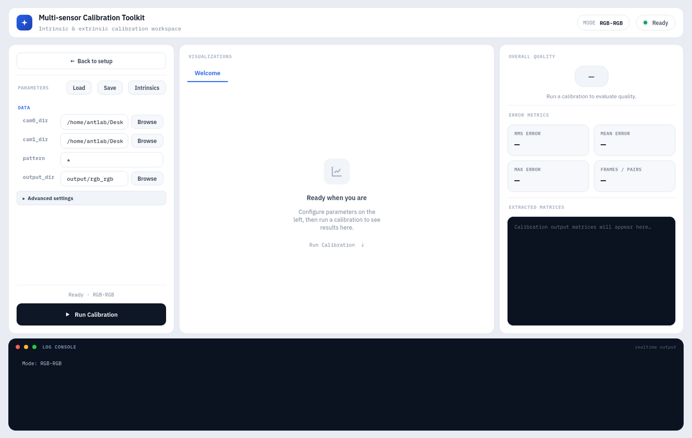
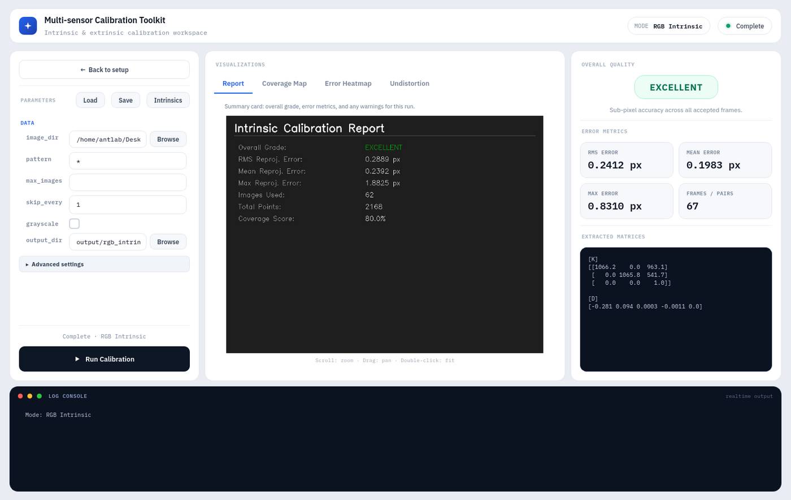

멀티 센서 캘리브레이션 툴킷 개발
RGB·LWIR(열화상) 카메라의 내부 파라미터와 스테레오·카메라–라이다·라이다–라이다 구성의 외부 파라미터를 단일 프레임워크에서 추정하는 통합 다중 센서 캘리브레이션 툴킷. 산업 현장의 비이상적 데이터에 강건하도록 설계하고, 정량 품질 등급과 시각화로 검증 가능한 워크플로를 제공한다.
Overview
본 과제는 (주)앤트랩에서 진행하는 통합 다중 센서 캘리브레이션 파이프라인 구축 과제로, RGB·LWIR(열화상) 카메라의 내부 파라미터(Intrinsics)와 스테레오(RGB–RGB, RGB–LWIR), 카메라–라이다(RGB–LiDAR), 라이다–라이다(LiDAR–LiDAR) 구성의 외부 파라미터(Extrinsics)를 하나의 프레임워크에서 추정하는 것을 목표로 한다.
타겟(체커보드, ChArUco) 기반 검출을 공통 모듈로 두고 카메라 모델(핀홀, 어안), 스테레오/PnP 외부 캘리브레이션, ICP 및 평면 기반 라이다 자동 정렬을 하나의 정합 체계로 일원화하였다. 모션 블러·노이즈·저해상도 등 산업 현장의 비이상적 데이터에 대응하기 위해 반복적 이상치 제거, 다중 스케일 최적화, 강건한 손실(robust loss) 기반 번들 조정을 적용하고, 재투영 오차·RMSE 기반 정량 품질 등급과 다양한 시각화를 제공하여 현장에서 신뢰할 수 있는 캘리브레이션 워크플로를 구성한다.
Approach
- 타겟(체커보드/ChArUco) 검출을 공통 모듈로 구성하고, 카메라 모델(핀홀/어안)과 다양한 센서 조합을 단일 워크플로로 처리하는 재사용 가능한 통합 파이프라인 설계
- RGB·LWIR 카메라 내부 파라미터(Intrinsic) 추정 모듈 구현
- 스테레오/PnP 외부 캘리브레이션과 카메라–라이다 정합, GICP 기반 라이다–라이다 자동 정렬 및 강건 손실 기반 번들 조정 적용
- 산업 환경의 비이상적 데이터(모션 블러·노이즈·저해상도) 대응을 위한 반복적 이상치 제거와 다중 스케일 최적화
- 재투영 오차·RMSE 기반 정량 품질 등급 시스템과 커버리지 맵·오차 히트맵 시각화로 검증을 지원하고, GUI 환경에서 쉽게 사용 가능한 툴킷 형태로 패키징




GUI 기반 4단계 통합 캘리브레이션 워크플로
Methods & Tech
Results
통합 툴킷은 카메라 내부 캘리브레이션에서 재투영 RMSE 0.5px 이내, 카메라–LiDAR 외부 캘리브레이션에서 RMSE 10mm 이내의 정밀도를 달성하였다. 재투영 오차·RMSE 기반의 정량 품질 등급과 커버리지 맵·오차 히트맵 시각화를 통해, 다양한 센서 조합에 대해 재사용 가능하고 검증 가능한 캘리브레이션 워크플로를 제공한다.
